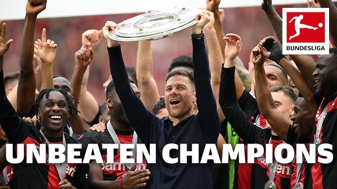

Analysis of Bayer Leverkusen's 2023/24 Unbeaten Season
Using 130,000+ Statsbomb event records to decode how Bayer Leverkusen went an entire 34-game Bundesliga season without a single defeat — the first club in the league's history to do so.

Overview
In 2023/24, Bayer Leverkusen did something no Bundesliga club had ever achieved — they went the entire 34-game season unbeaten, winning the title under Xabi Alonso with a brand of football defined by relentless pressing, late winners, and tactical flexibility.
This project uses over 130,000 event-level records from the Statsbomb open data API to quantify the tactical and statistical foundations of that historic campaign — from passing networks and pressing intensity to shot quality and goal involvement patterns.
Key Insights
- Late-Game Resilience: Leverkusen scored a disproportionate share of their goals in the final 15 minutes of matches — a pattern that defined their season narrative and reflected both physical conditioning and mental strength under pressure.
- xG Overperformance: The team consistently outperformed their expected goals (xG) figures, suggesting clinical finishing and high-quality chance creation were both contributing to their goal tallies beyond what chance quality alone would predict.
- Pressing Effectiveness: Statsbomb pressure event data showed Leverkusen among the most aggressive pressers in the Bundesliga, with their pressing leading to a high rate of ball recoveries in dangerous areas of the pitch.
- Key Player Contributions: Granit Xhaka and Florian Wirtz emerged as central nodes in the passing network — with Wirtz's goal involvement rate placing him among Europe's elite creators for the season.
Methodology
Statsbomb API Data Collection
Full match event data for all 34 Bundesliga games was pulled via the Statsbomb open data API using the statsbombpy Python library, providing 130,000+ event records.
Python Analysis
Pandas and mplsoccer were used to process events, compute metrics (xG, pressing intensity, pass completion by zone), and generate pitch visualisations including shot maps, pass networks, and pressure heatmaps.
Tableau Dashboard
Aggregated match and player statistics were loaded into Tableau to build an interactive season dashboard — covering league table progression, top scorers/assisters, and per-match performance breakdowns.
Explore the Project
Read the full analytical report or dive into the code on GitHub.